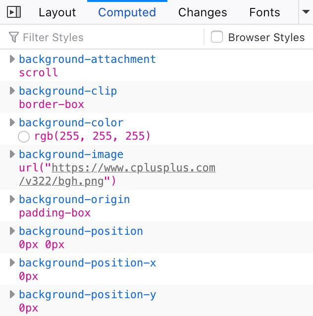

No Duck Typing In Rust
July 2020
Duck Typing
From Wikipedia, duck typing is
an application of the duck test— "If it walks like a duck and it quacks like a duck, then it must be a duck"— to determine if an object can be used for a particular purpose. With normal typing, suitability is determined by an object's type. In duck typing, an object's suitability is determined by the presence of certain methods and properties, rather than the type of the object itself.
Languages like Python use duck typing. A function like that adds two objects will work on anything that can do addition. For example:
>>> def add(a, b):
... return a + b
...
>>> add(1, 1)
2
>>> add("foo", "bar")
'foobar'
This shouldn't come as a terrible surprise to anyone who has written much Python before. Other languages also employ duck typing. C++ templates, for example, also use it. What's interesting though is that Rust does not.
In order to show an example of this, lets take a look at a function
called element_wise_weighted_sum. This function takes two containers
and their weights as arguments. Then, it returns a new container that
is the result of multiplying each container by its weight and adding
them together. In linear algebra terms, this might look something like
this, assuming that a and b are scalars and C and D are
vectors:
a*C + b*D
C++ & Rust
Lets take a stab at writing this function in C++ and Rust. Along the way we'll see how Rust's decision to not allow duck typing changes how the function is written. Here's the C++ version:
template<class T, class Container>
std::vector<T> element_wise_weighted_sum(Container& lhs, Container& rhs, T lhw, T rhw) {
std::vector<T> result(lhs.size());
for (size_t i = 0; i < lhs.size(); ++i) {
result[i] = lhs[i] * lhw + rhs[i] * rhw;
}
return result;
}
It's pretty straightforward. Our function is generic over two types, a container and an element type. The weighted sum is just a small for loop.
Notice that there are couple things we don't have to tell the type
system. We don't have to tell it that Container will always hold type
T, we don't have to tell it T will implement + and *, we don't
have to tell it that Container will be iteratable, we don't have to
tell it Container will have a size() method, we don't have to tell
it that T is copyable, and we don't have to tell it that
Container will be indexable. C++ just figures that out. If we try to
use types that don't satisfy those implicit constraints, our compiler
will give us an error telling us that.
Rust though is a slightly different story. Here's an equivalent Rust function.
fn element_wise_weighted_sum<T>(
lhs: &[T],
rhs: &[T],
lhw: T,
rhw: T,
) -> Result<Vec<T>, &'static str>
where
T: std::ops::Add<Output = T> + std::ops::Mul<Output = T> + Copy,
{
if lhs.len() != rhs.len() {
return Err("can't multiply arrays of differnt lengths");
}
Ok(lhs
.iter()
.zip(rhs)
.map(|(&lhs, &rhs)| lhs * lhw + rhs * rhw)
.collect())
}
Rust is a different story. In this function we've had to be explicit about all the things that were implied in C++.
- Container holds type
T→lhs: &[T] Twill implement+and-→T: std::ops::Add<Output = T> + std::ops::Mul<Output = T>- Container will be iterable → container is a slice.
Tis copyable -T: Copy
My Take
Rust is forcing us to be explicit about the assumptions we're making about our code. In this case, I'd say that's a good thing. I'll give an example though of that being painful from my work on Servo.
In CSS there are specified values and there are computed
ones. Specified values are ones that you write in your
style sheets. For example, color: black. Computed values are ones
that the browser uses when it actually paints the website. For example,
color: black becomes color: rgb(0, 0, 0). You can see computed
values in your web inspector. Here they are in Firefox:

In Firefox, every CSS value has a computed and a specified type so when possible we try and make our operations on them as generic as possible. This can get cumbersome though if you need to do a group of reasonably complex operations on those types.
My specific example is working with a generic percentage type. Say we want to do the following things with it:
- add assign →
+= - add →
+ - subtract assign →
-= - subtract →
- - ... (multiply, divide)
To get that to work in Rust, you need an insanely long where clause.
where
Percentage: Add<Output = Percentage> + AddAssign // + ...
In C++ it would just work.